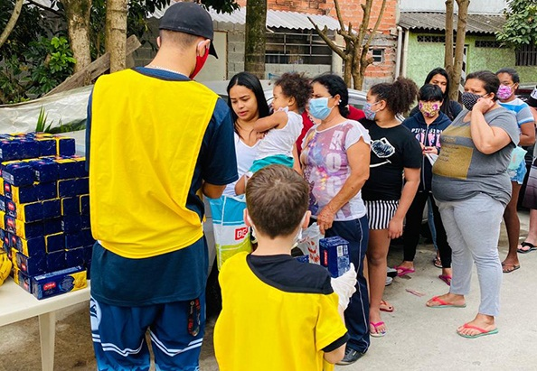

(1).png)
Conectando Quem Ajuda a Quem Mais Precisa.
Um sistema eficiente para transformar roupas, móveis e alimentos usados em apoio direto a famílias vulneráveis.

🌍 Transformamos Generosidade em Impacto Real
78%
Dos brasileiros gostariam de doar, mas precisam de um canal seguro (IDIS 2024).
R$ 24,3 Bi
Valor doado individualmente em bens materiais no último ano.
60%
Das doações são de roupas e calçados, o foco principal da nossa plataforma.
Como a DONATION Funciona?
1. Cadastre-se
Selecione seu perfil (Doador ou Beneficiário) e crie sua conta.
2. Doe ou Busque
Doadores: publiquem seus itens. Beneficiários: busquem no catálogo por filtros.
3. Conecte
A ONG aprova a solicitação e gerencia a coleta/entrega do item.